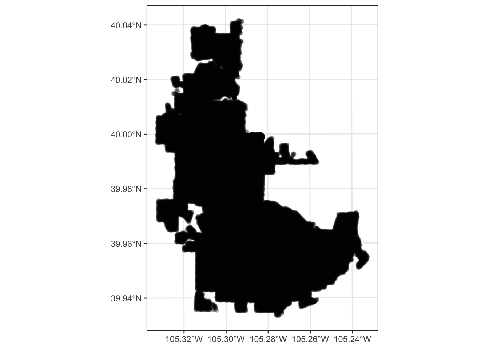
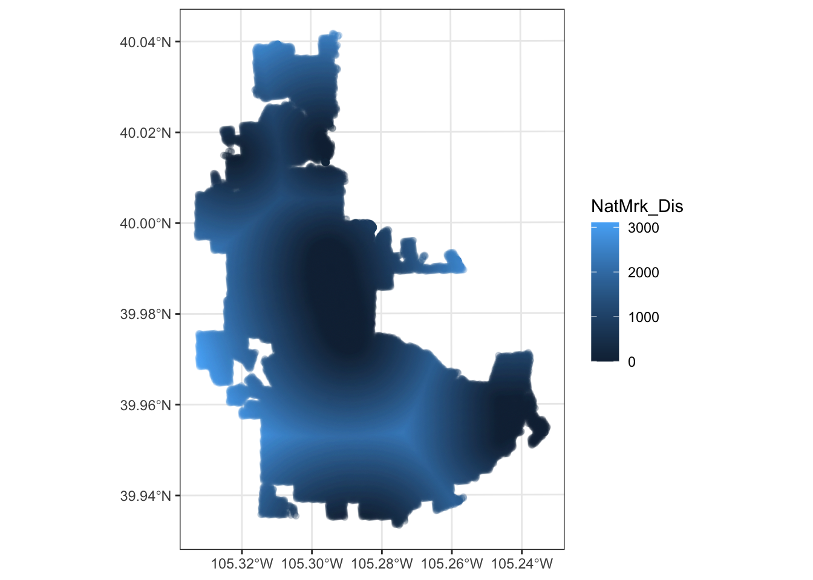
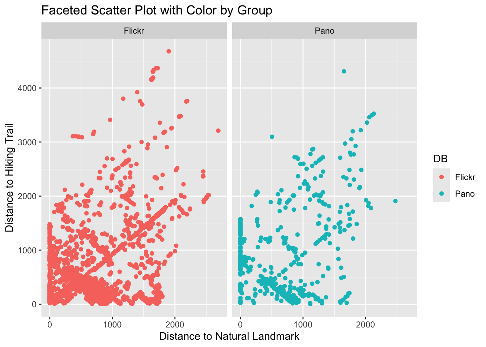
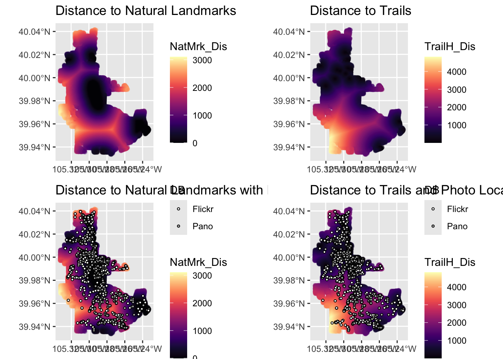

Lab 1: Distance to Natural Landmarks and Trails in Boulder, CO
Bridget Hennessy
Lab 1 - Creating An R-Markdown File
Loading Libraries for Analysis
library(ggplot2)
library(sf)
library(tidyverse)
library(dplyr)
library(tmap)
library(viridis)
library(gridExtra)Pulling In Data
Data Clean-Up
Data Projection and Visualization
In this code chunk, I transform the data projection and visualize the two distance variables of interest
boulder = st_transform(boulder, 26753)
ggplot() +
geom_sf(data =boulder,
fill = NA, alpha = .2) +
theme_bw()
ggplot() +
geom_sf(data =boulder, aes(color=NatMrk_Dis),
fill = NA, alpha = .2) +
theme_bw()
ggplot() +
geom_sf(data =boulder, aes(color=TrailH_Dis),
fill = NA, alpha = .2) +
theme_bw()
frequency_table <- table(boulder$DB)
print(frequency_table)##
## Flickr OSMP_lands Pano
## 6428 48644 447Data Analysis
Create a Scatterplot
In this code chunk, I create a Scatterplot displaying where photos are taken along the two distance variables. This scatterplot shows that more photos are taken closer to walking trails and natural landmarks.
boulder_sub <- boulder %>% filter(DB %in% c("Flickr", "Pano"))
ggplot(boulder_sub, aes(x = NatMrk_Dis, y = TrailH_Dis, color = DB)) +
geom_point() +
facet_wrap(~ DB) +
labs(title = "Faceted Scatter Plot with Color by Group",
x = "Distance to Natural Landmark",
y = "Distance to Hiking Trail")
Create a Geovisualization
In this code chunk, I plot the distance variables next to each other to compare whether the natural landmarks are near hiking trails in these nature areas. Underneath, I plot the locations of photo-taking opportunities (in gray and white to not overwhelm the maps with colors) overlaid onto the distance variables to see where photos are taken in the park with the distance to trails and distance to landmarks in mind. The majority of photos are taken in close proximity to walking trails, perhaps as hikers do not want to leave the trails to take photos. There are also many natural landmarks that are close to trails, perhaps as these trails are designed to take hikers to these areas, making photo opportunities easier there. In the southwest corner of the Boulder location there seems to be a large area that is far from both natural landmarks and trails, where very few pictures are taken.
p1 <- ggplot() +
geom_sf(data = boulder, aes(color = NatMrk_Dis), fill = NA, alpha = 0.2) +
scale_colour_gradientn(colors = viridis::magma(10), name = "NatMrk_Dis") +
labs(title = "Distance to Natural Landmarks") +
theme(legend.position = "right")
p2 <- ggplot() +
geom_sf(data = boulder, aes(color = TrailH_Dis), fill = NA, alpha = 0.2) +
scale_colour_gradientn(colors = viridis::magma(10), name = "TrailH_Dis") +
labs(title = "Distance to Trails") +
theme(legend.position = "right")
p3 <- ggplot() +
geom_sf(data = boulder, aes(color = NatMrk_Dis), fill = NA, alpha = 0.2) +
scale_colour_gradientn(colors = viridis::magma(10), name = "NatMrk_Dis") +
geom_sf(data = boulder_sub, aes(fill = DB), color = "black", shape = 21, size = 0.8) +
scale_fill_manual(values = c("Flickr" = "white", "Pano" = "gray"), name = "DB") +
labs(title = "Distance to Natural Landmarks with Photo Locations") +
theme(legend.position = "right")
p4 <- ggplot() +
geom_sf(data = boulder, aes(color = TrailH_Dis), fill = NA, alpha = 0.2) +
scale_colour_gradientn(colors = viridis::magma(10), name = "TrailH_Dis") +
geom_sf(data = boulder_sub, aes(fill = DB), color = "black", shape = 21, size = 0.8) +
scale_fill_manual(values = c("Flickr" = "white", "Pano" = "gray"), name = "DB") +
labs(title = "Distance to Trails and Photo Locations") +
theme(legend.position = "right")
gridExtra::grid.arrange(p1, p2, p3, p4, nrow = 2, ncol = 2)